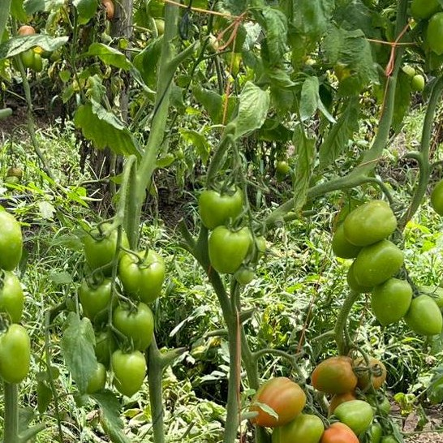
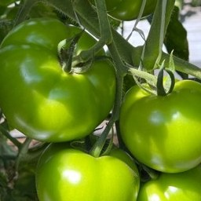
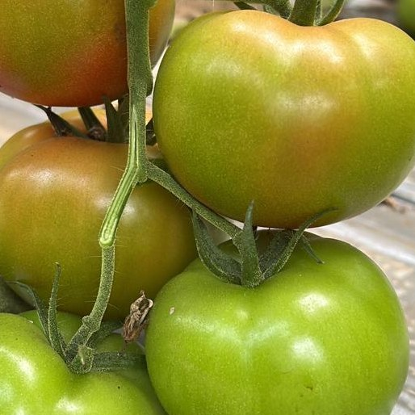
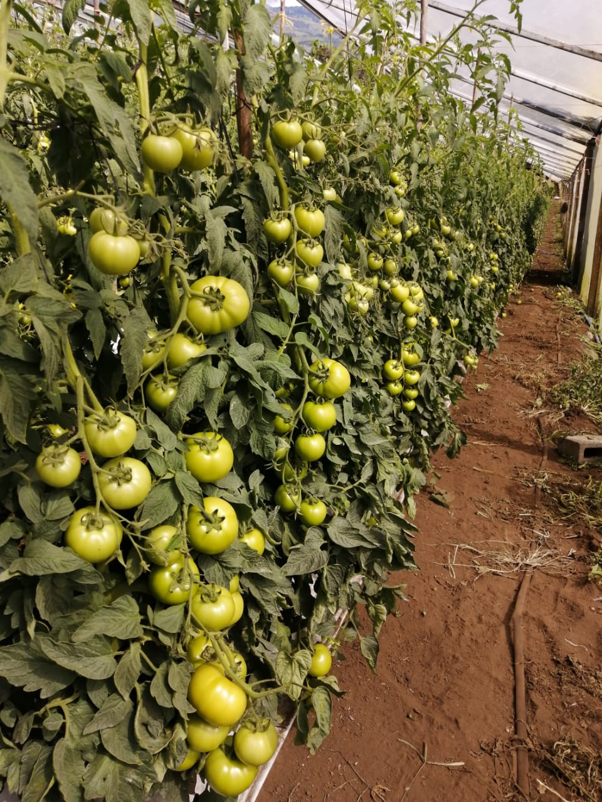
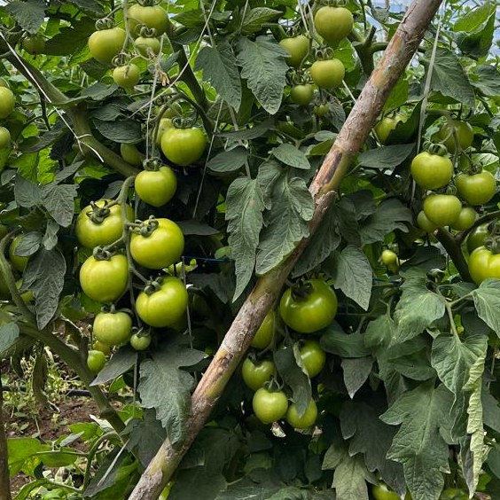
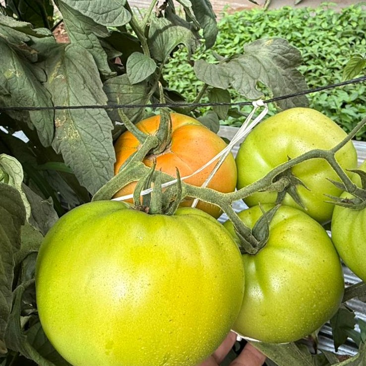
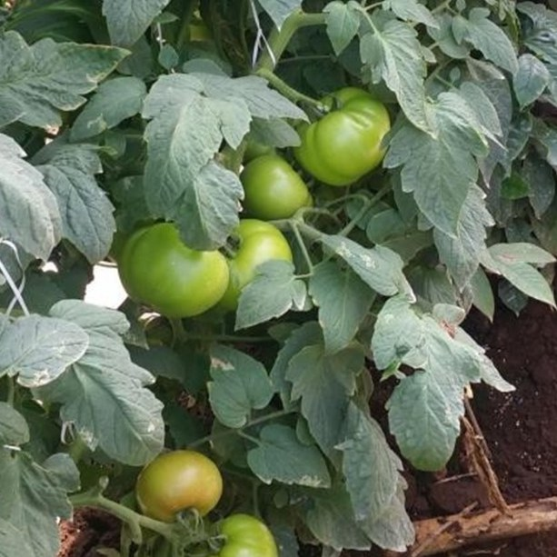
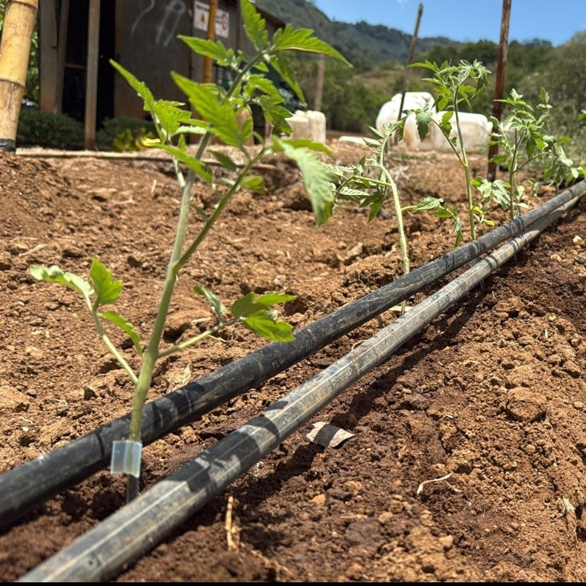
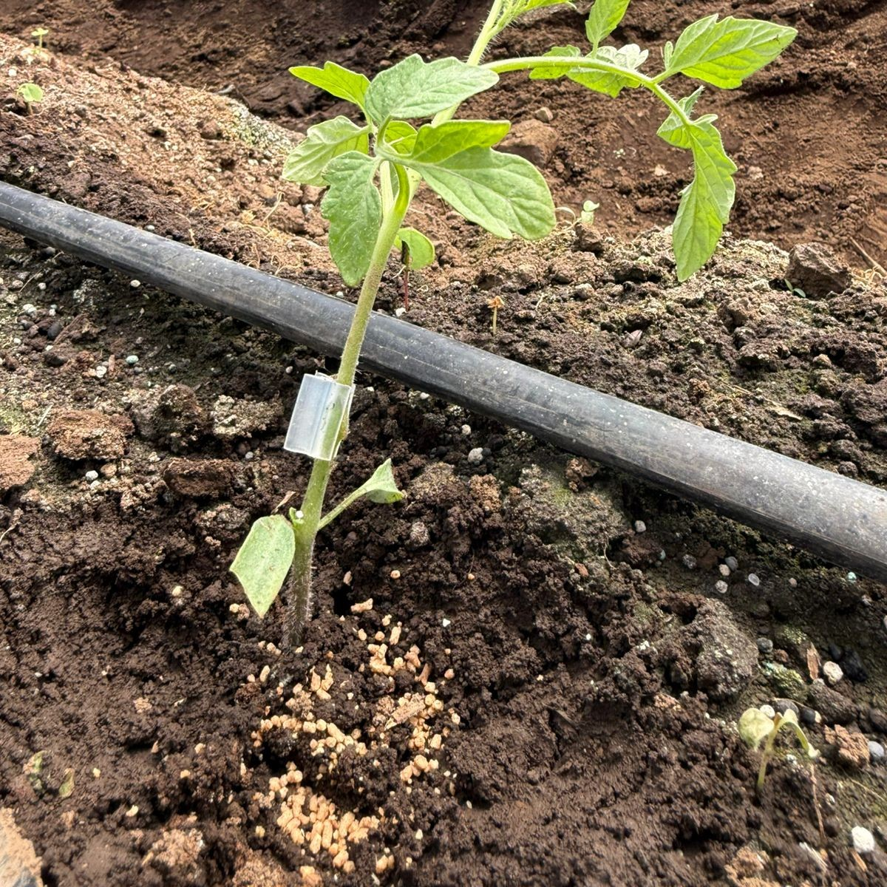

📄 Fichas Técnicas en PDF
Descargue las fichas técnicas detalladas de cada variedad con información completa de resistencias y manejo.

Distribuimos semillas BHN Seed Hybrid Tomato — marca líder en semillas híbridas de tomate a nivel mundial.

CACIQUE
Planta indeterminada de excelente vigor con frutos de alta firmeza y larga vida poscosecha. Destacada adaptabilidad a diferentes condiciones de clima y suelo.

IL-1907
Tomate indeterminado de follaje vigoroso, fruto grande y multilocular con excelente firmeza. Adaptado a las condiciones de Costa Rica.

IL-1908
Planta indeterminada de porte alto, con frutos de excelente calibre y larga vida poscosecha. Ideal para producción de verano e invierno.

IL-1909
Planta indeterminada con frutos de calibre extragrande y excelente poscosecha. Alta productividad con 3–5 frutos por racimo.

JM PLUS
Fruto extragrande y redondeado con mesocarpio grueso y consistencia muy firme. Follaje moderado y excelente comportamiento en poscosecha.

JR SPECIAL
Excelente vida poscosecha y alto valor comercial. Planta robusta con buen amarre de frutos y producción consistente por racimo.

MILAN
Planta indeterminada con alta carga de frutos por planta (3–7 por racimo). Excelente larga vida de anaquel y resistencia amplia a enfermedades.

SDGR 21
Tomate tipo Beef indeterminado con planta robusta. Frutos globosos, firmes y de excelente calidad. Variedad insignia de Semillas DGR.

TITAN
Planta indeterminada de porte alto con excelentes características para invierno y verano. Fruto tipo bola con hombros medios y cierre perfecto.

VULCANO
Planta indeterminada de porte alto adaptada a invierno y verano. Fruto tipo bola con hombros medios, cierre excelente y larga vida de anaquel.

PATRÓN
Excelente alternativa para suelos con hongos patógenos y nemátodos. Brinda sistema radicular eficiente con alta capacidad de consumo de nutrientes y tolerancia a estreses abióticos (pH, salinidad, bajas temperaturas).

R1912
Portainjerto intraespecífico de innovación genética con excelente compatibilidad entre portainjerto y copa. Brinda sinergismo óptimo para maximizar resistencia y alta producción.
Glosario de Resistencias
Las resistencias en semillas de tomate se clasifican en dos niveles: HR (High Resistance / Resistencia Alta) e IR (Intermediate Resistance / Resistencia Intermedia). Los códigos se agrupan por tipo de patógeno: Virus → Bacterias → Hongos → Nemátodos.
Resistencia Alta — La planta controla eficazmente el patógeno bajo presión normal de la enfermedad.
Resistencia Intermedia — La planta reduce el impacto del patógeno pero puede mostrar síntomas leves bajo alta presión.